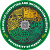

IT Skills Olympics is an annual event of the University of Makati's College of Computing and Information Sciences.
This event celebrates the best and brightest young minds in the field of information technology.
Open to all students and Inspire innovators
This prestigious competition is open to students from all over the country, and features a variety of challenging tasks in areas such as programming, cybersecurity, web page design, and more.
The IT Olympics is a great way to celebrate the achievements of excellent IT students and to inspire the next generation of innovators.

College of Computing and Information Sciences
The College of Computing and Information Sciences (CCIS) is the leading college in ICT education programs of the university by providing competitive, relevant and functional IT Curriculum responsive to the needs of the industrial and business organizations.